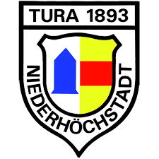
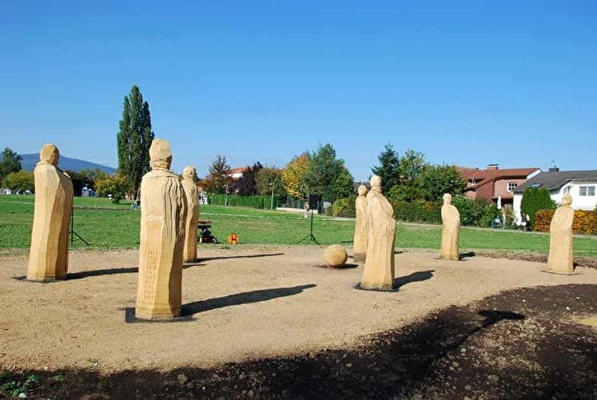

Erleben
Freizeit in Eschborn genießen!

Veranstaltungen
Echborn bietet Veranstltungen rund um das gesamte Jahr an. Die genauen Daten sind im Veranstlatungkalender enthalten
Link zum Veranstlatungskalender
Sport & Freizeit
Eschborn bietet ein breiten Spektrum an Vereinen und Möglichkeiten an, in denen man Sport machen kann: Turnverein Eschborn 1888 e.V.
Turn- und Rasensportverein Niederhöchstadt 1893. e. V.
Weitere Sportangebote sind Eschathlon (in der Regel im Juni), Radrennen Rund um Frankfurt und Eschborn
Escborn verfügt über viele Parks, in denen Besucher und Bürger ihre Freizeit erleben können. So ist der Skulpturenpark hervorzuheben, eine Attraktion die weit über die Grenzen Eschborns bekannt ist.
Hier sind viele Skulpturen über eine sogenannte Skulpturenachse Echborn und Niederhöchstadt ausgestellt, die man besichtigen kann.
Für Kinder verfügt Echborn über viele kleine in den jeweiligen Gebiten verteilte Soielpltzäe. Das Highlight ist der Traktorspielplatz am Westerbach. Dieser Spielpltz verfügt über unterschiedliche Bereiche,
so dass Kinder unterschiedlichen Altern, ja sogar Erwachsene etwas für sich entdecken können. Es gibt Tischtennisplatten, Ausdauer-Sportgeräte und auch eine öffentliche Toilette. Mittelpunkt ist der rote Traktor.
Eschborn verfügt auch in den Grünanlagen über jeweilige Grillplätze sowie eine Grillhütte, die bei der Stadt gemietet werden kann. Man kann sich über folgenden Kontakt zur anmelden:
belegung@eschborn.de Tel. 06196 490-234
Kultur & Attraktionen
In Eschborn gibt es viele wiederkehrende Veranstlatung auf die sich unsere Bürger und Gäste freuen. Hier einige Highlights: Summertime: Jeden Sommer findet für 2 Monate jede Woche ein kostenloses
Open-Air Konzert statt , das sich im Löaufe der Jahre zu einem Klassiker nicht nur für Eschborn sondern für die Umgebung auch entwicklet hat. Niederhöchstätter Markt: Alle 2 Jahre (gerade Zahlen)
gibt es in der Niderhöchstätter Altsadt für ein Wochende eine wundervolle Marktaltmosphäre. Eschborner Weihnachtsmarkt: Findet immer am 2. Advent statt. Niederhöchstätter Weihnachtsmarkt am Montgeronplatz:
Findet am 3. Advent jährlich statt. Eschenfest: In der Altstadt findet im Juni für ein Wochenende dieses Fest statt. Museum & Stadtarchiv. In Eschborn gibt es ein Museum, das auch das Stadtarchiv beheimatet.
Hier kann man in die Geschichte Eschborn eintauchen. Eschenplatz 165760 EschbornTelefon: 06196/490-230 museum@eschborn.de Bühne & Film mit dem Eschborn verfügt Eschborn über
einen Veranstlatungsort in dem Kleinkunst, Konzerte, Kino und Kabarett angeboten werden. Die laufenden Events sind hier erwähnt: https://eschborn-k.de/
Einige Sehenswürdigkeiten, die Eschborn so attraktiv machen sind auch: SkulpturenparkSeit 2010 werden in Eschborn und Niederhöchstadt in einer großzügig gestalteten Parkanlage Kunstwerke stilvoll platziert.
Hier finden zahlreiche kulturelle Veranstaltungen und Ausstellungen statt.Stolpersteine Auch in Eschborn befinden sich vier Stolpersteine ein Projekt, das an diejenigen Menschen erinnert, die im
Nationalsozialismus verfolgt und ermordet wurden. Weitere Details hier
Tourismus
Eschborn bietet unterschiedliche Übernachtungsmöglichkeiten an, je nacdem, ob man in familiärer Atmosphäre die Stadt und die Umgebung erkunschaften will und nah an den S-Bahn-Anschlüssen sein Gastronomie Eschborn
kulinarische Vielfältigkeit spiegelt sich in den Restaurants wieder. Hier eine kleine Auswahl: Italienische Küche: Mama Rosa, Lucania, A Tavola da Carmelo etc. Indisch: Crown of India Kroatisch: Westerbachhhalle,
Dalmatia Deutsch: Apfelwein Müller Böhmisch: Bauernschänke Koreanisch: MoMo, Sushi Maru
möchte oder man beruflich, so im Gewerbe Eschborn Süd zu tun hat.
